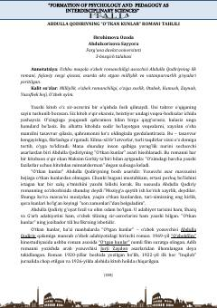

OKAbdulla Qodiriyning "Oʻtkan kunlar" romani tahlili va uning gʻoyaviy-badiiy xususiyatlari.
Ushbu ilmiy maqolada oʻzbek romanchiligining asoschisi Abdulla Qodiriyning ilk va mashhur "Oʻtkan kunlar" romani, uning yozilish tarixi, gʻoyaviy-badiiy xususiyatlari hamda asar qahramonlari taqdiri tahlil qilingan. Maqolada asardagi milliylik, vatanparvarlik va fojiaviy sevgi motivlari ochib berilgan.